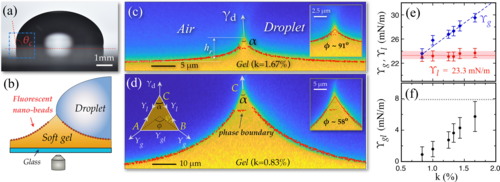
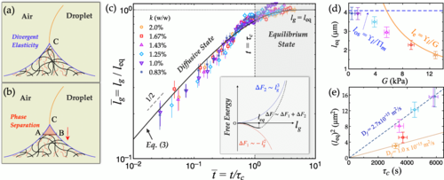

Wetting and phase separation润湿与相分离
How liquids reorganize soft polymer networks and generate evolving surface domains.液体如何重组软聚合物网络并产生持续演化的表面结构域。
Soft matter · Interfacial mechanics软物质 · 界面力学
I study the mechanics and physics of soft materials and interfaces, with particular interests in wetting, adhesion, phase separation, quantitative optical measurement, and computational engineering.
My work connects fundamental physical questions with carefully designed experiments and practical material problems.
我的研究聚焦于软物质与界面的力学和物理问题，主要关注润湿、黏附、相分离、定量光学测量与计算工程。
我的工作将基础物理问题、精细实验设计与实际材料问题联系起来。

How liquids reorganize soft polymer networks and generate evolving surface domains.液体如何重组软聚合物网络并产生持续演化的表面结构域。

The roles of network structure, free chains, and surface heterogeneity in contact and adhesion.网络结构、自由链和表面非均匀性在接触与黏附中的作用。
DIC
Image-based methods for deformation, lens correction, coating fracture, and material characterization.面向变形、镜头校正、涂层断裂和材料表征的图像测量方法。
Langmuir 42(31), 22623–22629.
Physics of Fluids 37, 042108.
Physical Review Research 6, 033210.